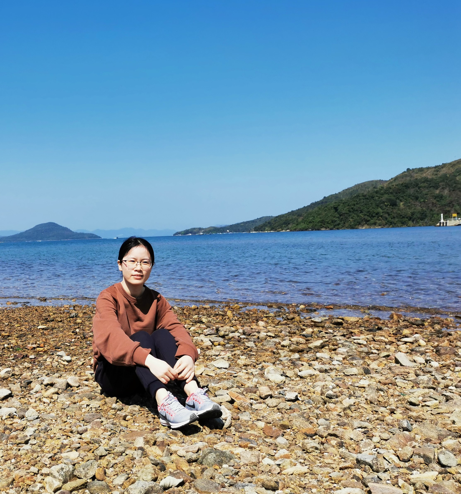

|  | Liaoyuan ZengPostdoctoral Fellow, AMA, The Hong Kong Polytechnic University Email: lyzeng 'at’ polyu.edu.hk I received my Bachelor degree in 2013 from the Hunan University, School of Mathematics. I got my PhD degree in June 2018, under the supervision of Professor Yu-Hong Dai in Academy of Mathematics and Systems Science of Chinese Academy of Sciences. From October 2018 to October 2019, I was a postdoctoral fellow at The Hong Kong Polytechnic University, under the mentorship of Professor Xiaojun Chen. Now I am a postdoctoral fellow, working with Professor Ting Kei Pong at The Hong Kong Polytechnic University. |
Nonlinear optimization and its applications: first-order methods for large-scale (convex or nonconvex) problems.
Liaoyuan Zeng, Peiran Yu and Ting Kei Pong. Analysis and algorithms for some compressed sensing models based on L1/L2 minimization. SIAM J. Optim. 31, 2021, pp. 1576-1603.
Chen Chen, Ting Kei Pong, Lulin Tan and Liaoyuan Zeng. A difference-of-convex approach for split feasibility with applications to matrix factorizations and outlier detection. J. Global Optim. 78, 2020, pp. 107-136. See the ArXiv version for a fix of minor errors in Lemma 4 and Proposition 5.
Liaoyuan Zeng, Yu-Hong Dai and Ya-Kui Huang. Convergence Rate of Gradient Descent Method for Multi-Objective Optimization. J. Comp. Math. 37, 2019, pp. 689-703.
2018.01 – 2018.03: Research Assistant, The Hong Kong Polytechnic University, hosted by Professor ZHANG Zaikun.
2018.07 – 2018.09: Visitor, Academy of Mathematics and Systems Science, Chinese Academy of Sciences, hosted by Professor Ya-Feng Liu.